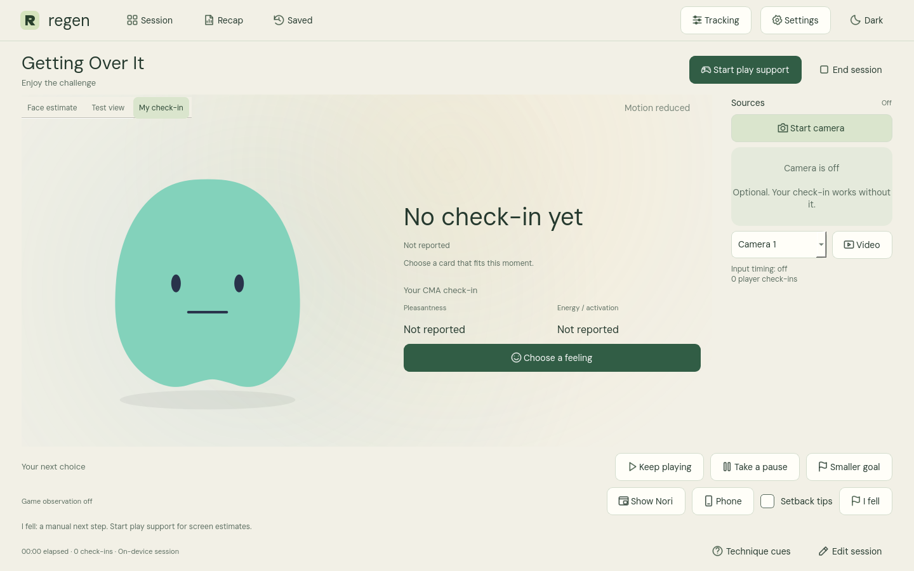

Challenge can be the point
Getting Over It is built around difficult climbs and lost progress. Removing every struggle misses the attraction.

Interaction design / Gaming
A small next step.
Room to try again.
The project
Regen stays beside players learning Getting Over It. After a possible fall, it offers one small next step. A check-in helps the player choose support that fits.
01 / Empathize
A player can laugh at a setback, get angry, or enjoy the challenge.
A face and a failed attempt don’t tell the whole story.
Getting Over It is built around difficult climbs and lost progress. Removing every struggle misses the attraction.
A brow or a smile can mean different things. The player’s check-in supplies the CMA coordinates.
A cue can interrupt or spoil a discovery. Let the player request it and decide whether it helped.
Five fictional personas. Three Indian contexts.
Needs a way back to the next round after teammate conflict.
Needs control over labels, camera use and who sees them.
Wants one useful takeaway from a short session.
Wants a hint without losing the discovery.
Needs a way to separate performance from personal experience.
02 / Define
After I lose progress, help me find my next step without leaving the game.
03 / Ideate
A launcher adds another library. A venue platform adds a business.
Regen stays with one player and one next choice.
Choose your help.
Camera optional.
Estimate a fall.
Or mark it yourself.
Let the view settle.
One short suggestion.
Try, pause or mute.
Reflect when useful.
04 / Prototype

During the game
You can laugh, stay focused or feel frustrated.
Nori offers support without deciding that for you.
Ready for the next try.
Interactive example
Automatic invitations are at least two minutes apart. The player can ignore them.

The framework, working
CMA describes pleasantness and activation.
A player describes the moment. Their response stays a choice.
Interactive example / Your check-in
One change for the next attempt.
Unpleasant + high activation
A shorter choice first.
Unpleasant + low activation
A smaller goal is available.
Mixed, missing or other
Choose the amount of help.
The face of Regen
One character, soft features and smooth changes.
43 authored check-in looks. A smaller, uncertain set of camera estimates.
Neutral stays neutral
A flat mouth. No pretend smile when tracking is missing.
Expressions have detail
Curved brows, eyes, mouth, visible teeth and hand cues.
Movement has a purpose
Subtle transitions keep the same character recognisable.
Practice, then reflect
The player reports frustration, chooses a pause
and describes the next moment.


System / Service / Product
A frameless Nori brings a brief suggestion into play. The paired phone shows the same derived state while the game stays in focus.
Your check-in
Calm / lower activation
The laptop does the analysis. The phone receives derived state over trusted Wi-Fi. No face or game images are sent.
Open a sample session recapBrand and visual language
From the gaming idea of regeneration.
A fresh attempt, with the player still in control.
Nori is the character. Regen is the app.

Feasibility
Setback responses, manual fallback, optional camera, player check-ins and a CMA recap.
Physical camera, actual game events, Wi-Fi, frame-rate impact and whether help earns its interruption.
No venue bookings, whole-game understanding or automatic recognition of 43 felt emotions.
Codex / Python / PySide6 / QPainter / MediaPipe / HSE / Playwright / Chromium / GitHub / Image generation
The process moves through Empathize, Define, Ideate and Prototype. Player input and local AI support a companion during play. Its intended human benefit is agency during difficult play.
Research is secondary. The five personas are fictional. App screens use scripted demonstration inputs. The papercraft world is generated artwork. Nori and the app are native vectors. Colour is authored visual identity, not a universal emotion measurement.
The native flow and report use scripted checks. The latest review checks and their scope are linked below. No actual player study or in-game recognition accuracy is claimed.
Reference access and software-check limits are recorded in the supporting research notes.